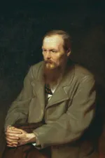

Александр Пушкин начал писать свои первые произведения уже в семь лет. В годы учебы в Лицее он прославился, когда прочитал свое стихотворение Гавриилу Державину. Пушкин первым из русских писателей начал зарабатывать литературным трудом. Он создавал не только лирические стихи, но и сказки, историческую прозу и произведения в поддержку революционеров — за вольнодумство поэта даже отправляли в ссылки.
Михаил Лермонтов — один из самых известных русских поэтов, и признание к нему пришло еще при жизни. Его творчество, в котором сочетались острые социальные темы с философскими мотивами и личными переживаниями, оказало огромное влияние на поэтов и писателей XIX–XX веков. «Культура.РФ» рассказывает о личности, жизни и творчестве Михаила Лермонтова.
Лев Толстой — один из самых известных писателей и философов в мире. Его взгляды и убеждения легли в основу целого религиозно-философского течения, которое называют толстовством. Литературное наследие писателя составило 90 томов художественных и публицистических произведений, дневниковых заметок и писем, а самого его не раз номинировали на Нобелевскую премию по литературе и Нобелевскую премию мира.
Иван Тургенев был одним из самых значимых русских писателей XIX века. Созданная им художественная система изменила поэтику романа как в России, так и за рубежом. Его произведения восхваляли и жестко критиковали, а Тургенев всю жизнь искал в них путь, который привел бы Россию к благополучию и процветанию.

Федор Достоевский с детства мечтал стать писателем. Первый же его роман «Бедные люди» высоко оценили Николай Некрасов и Виссарион Белинский, а четыре поздних произведения вошли в список «100 лучших книг всех времен».